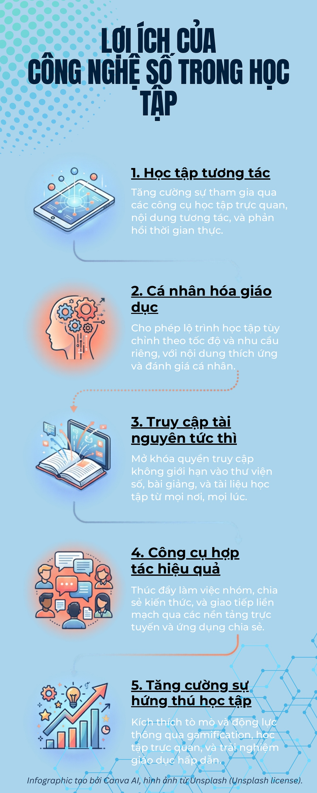

Giải Pháp Tiêu Biểu
Ứng dụng công nghệ số trong học tập
Điện Toán Đám Mây
Lưu trữ an toàn, truy cập tài liệu mọi lúc mọi nơi. Google Drive, OneDrive hay Dropbox giúp sinh viên làm việc nhóm và chia sẻ dữ liệu chỉ với một cú click chuột.
Trí Tuệ Nhân Tạo (AI)
Từ ChatGPT đến các công cụ dịch thuật, phân tích dữ liệu. AI hỗ trợ giải đáp thắc mắc tự động, tóm tắt bài giảng và lên ý tưởng sáng tạo vượt trội.
Học Trực Tuyến
Nền tảng học trực tuyến giúp kết nối giảng viên và sinh viên mọi lúc mọi nơi.
Infographic Công Nghệ Số
